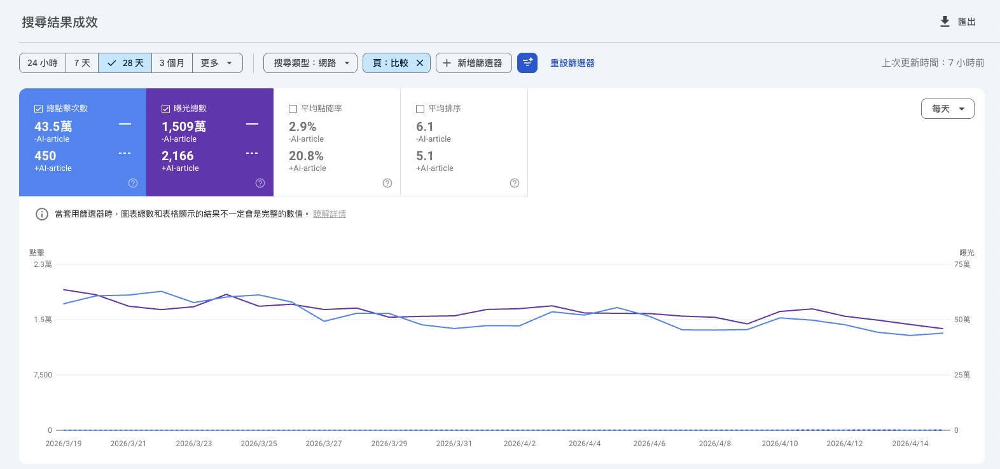
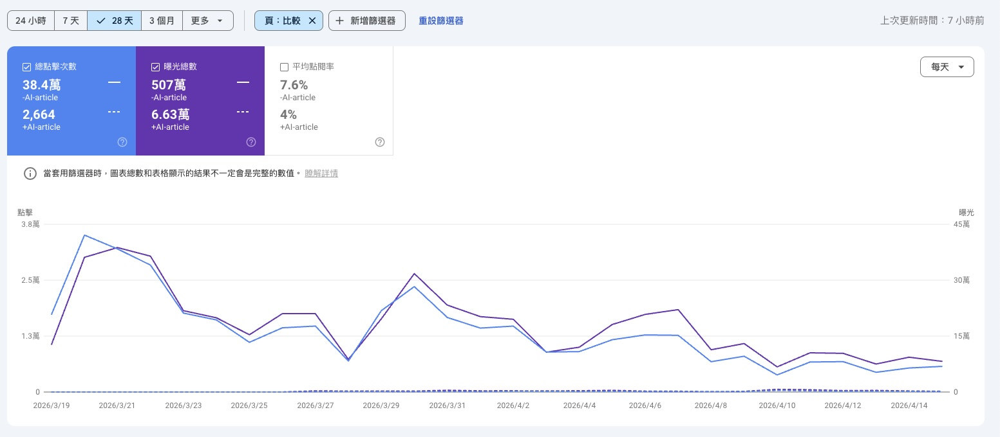

📅 統計日期：2026/03/19 - 2026/04/15
為了同時滿足「搜尋流量要快狠準」與「探索流量要懸念」，Prompt 需強制採用雙效漏斗結構：**一句話給出直球承諾與解方痛點（滿足搜尋意圖），但扣留關鍵操作或驚人反差在文章後方（製造探索懸念）**。
📍 完美示範：「想靠 Z 字蹲快速消水腫？這 3 招超有效，但其中第 2 個細節多數人都做錯...」
既然 AI 子文章的條列式解答在搜尋大獲全勝且高居首頁，下一版產品開發應自動將文章內的重點條列埋入 FAQ 結構化標記 (Schema)，大幅提高跨平台搶佔 Google「第零位精選摘要 (Featured Snippets)」的機率。
修改 Prompt，讓 AI 在產出內文時，不要只打單一大主題，而是強制將使用者關注的垂直長尾場景（如：「沙漏型身材」、「特定品牌平替」、「特定情境穿搭」）自然轉換為 H2/H3 副標題，擴張 AI 文章在 Search 上的捕魚網面積。

強制 AI 提取時間、重量、價格等數據，改寫為 Before/After 結構（例如從「厚底鞋介紹」改為「穿錯鞋翻船！藍心湄親授...」），寫出閨蜜八卦感。
前導文前 30 字必須拋出痛點解答或懸念鉤子；內文強迫使用重點 Markdown 粗體與條列式排版。
引導 AI 結合「節目達人、具體生活痛點」，禁止平鋪直敘單品規格，正面迎擊 Google E-E-A-T 審查。
開發機制讓 AI子文章優先抓取「母文章」的首圖解決視覺盲點。
🚨 盤點 0 CTR 的 79 篇舊 AI子文章，進行 noindex (禁止索引) 處理。
此策略形同「修剪枯枝」，主動讓 0 流量內容對 Google 隱形，避免演算法疊加判定我們為「量產廢文的農場」，從而防守並保全全站主力母文章的 SEO 排名與權重。
